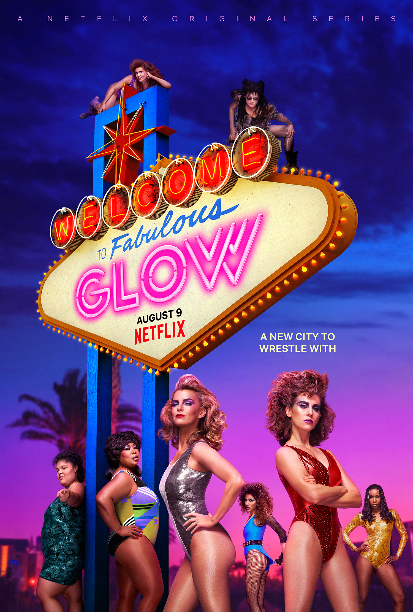

Welcome to Pop! Culture
If you love music, movies and shows then you will love Pop! Culture.
We provide the best new media in all of Seneca's many campuses!
Specials
Good media is a good media.
You don't need the bleeding edge of technology but you do need a lot of bandwidth.
Take a gander at our selection of top streaming shows!
They're guaranteed to kill many hours of what should have been productive time.

- GLOW
The Netflix original series GLOW has one of the more original premises in recent TV history:
It chronicles the life of a fledgling professional wrestling promotion called the Gorgeous Ladies of Wrestling,
as various aspiring actresses and generally women down on their luck audition
and agree to take a stab at a wholly new field.
 Parks and Recreation
Parks and Recreation
What sets Parks and Recreation apart from other comedies is that it’s absolutely sincere and free of cynicism.
It’s clear that even if the characters rib each other, there’s genuine love between them.
But yes, the show is hilarious, and Amy Poehler’s Leslie Knope is one of the seminal sitcom characters of our time.
 Stranger Things
Stranger Things
The 80s-set mystery thriller is equal parts It, Stand by Me,
and The Goonies as it mashes up the creepy atmosphere of a Stephen King novel
with compelling characters and a strong narrative drive.
The true test of Stranger Things is whether the show works without
the nostalgia-inducing 80s setting, and the answer is yes.
 Star Wars: The Clone Wars
Star Wars: The Clone Wars
Star Wars: The Clone Wars takes place during the title conflict,
a time when Anakin Skywalker and his fellow Jedi Knights led
the Grand Army of the Republic against the Separatists’ New Droid Army.
It’s notable for greatly expanding (and improving on)
Anakin Skywalker’s backstory before he took on the persona of Darth Vader.
Top Movies of 2018
It's not even award season yet but let's rank the top movies of the year.

- Ready Player One
In the year 2045, people can escape their harsh reality in the OASIS,
an immersive virtual world where you can go anywhere, do anything,
be anyone-the only limits are your own imagination. OASIS creator
James Halliday left his immense fortune and control of the Oasis to the
winner of a contest designed to find a worthy heir.
 Deadpool 2
Deadpool 2
After surviving a near fatal bovine attack, a disfigured cafeteria chef (Wade Wilson) struggles to fulfill his dream of becoming Miami's hottest bartender, while also learning to cope with his lost sense of taste. Searching to regain his spice for life, as well as a flux capacitor, Wade must battle ninjas, the yakuza, and a pack of sexually aggressive canines, as he journeys around the world to discover the importance of family, friendship, and flavor - finding a new taste for adventure and earning the coveted coffee mug title of World's Best Lover.
 Tully
Tully
Marlo, a mother of three including a newborn,
is gifted a night nanny by her brother. Hesitant to the extravagance at first,
Marlo comes to form a unique bond with the thoughtful, surprising,
and sometimes challenging young nanny named Tully.
 Black Panther
Black Panther
"Black Panther" follows T'Challa who, after the events of "Captain America: Civil War," returns home to the isolated, technologically advanced African nation of Wakanda to take his place as King. However, when an old enemy reappears on the radar, T'Challa's mettle as King and Black Panther is tested when he is drawn into a conflict that puts the entire fate of Wakanda and the world at risk.
Contact us
Address
Seneca@York Campus
Toronto, ON
Find us online
https://www.popculture.com
© 2019. All titles and ranking have been stolen from spotify, Rotten Tomatoes and Netflix.